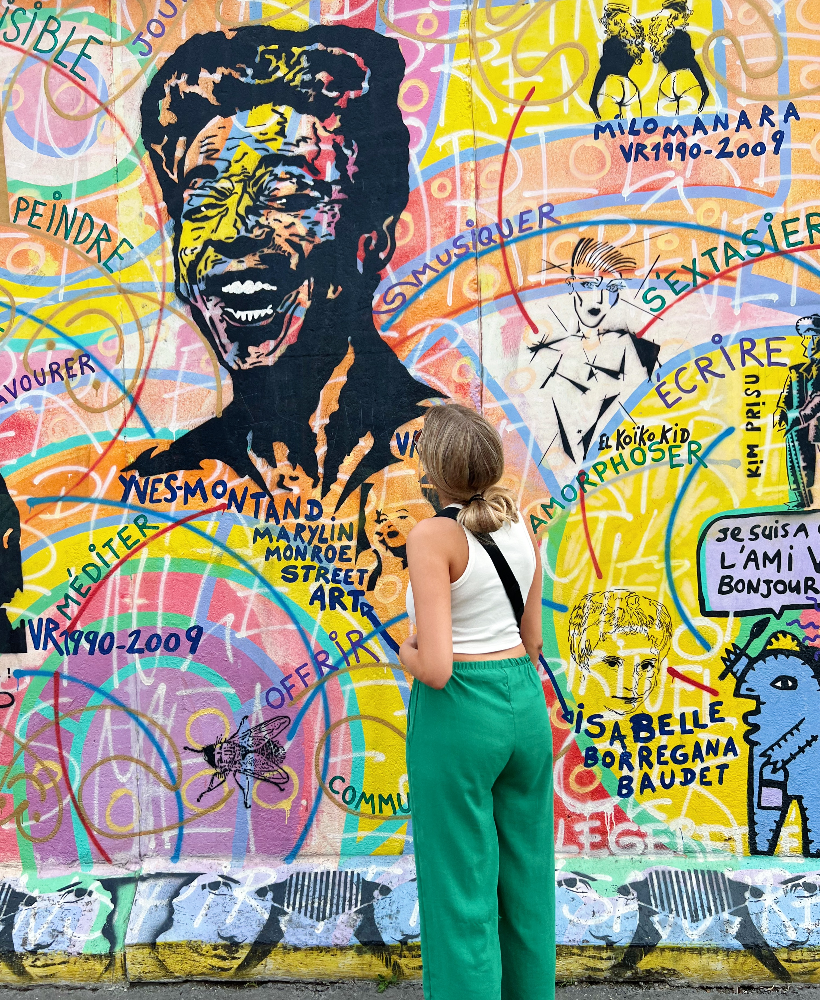
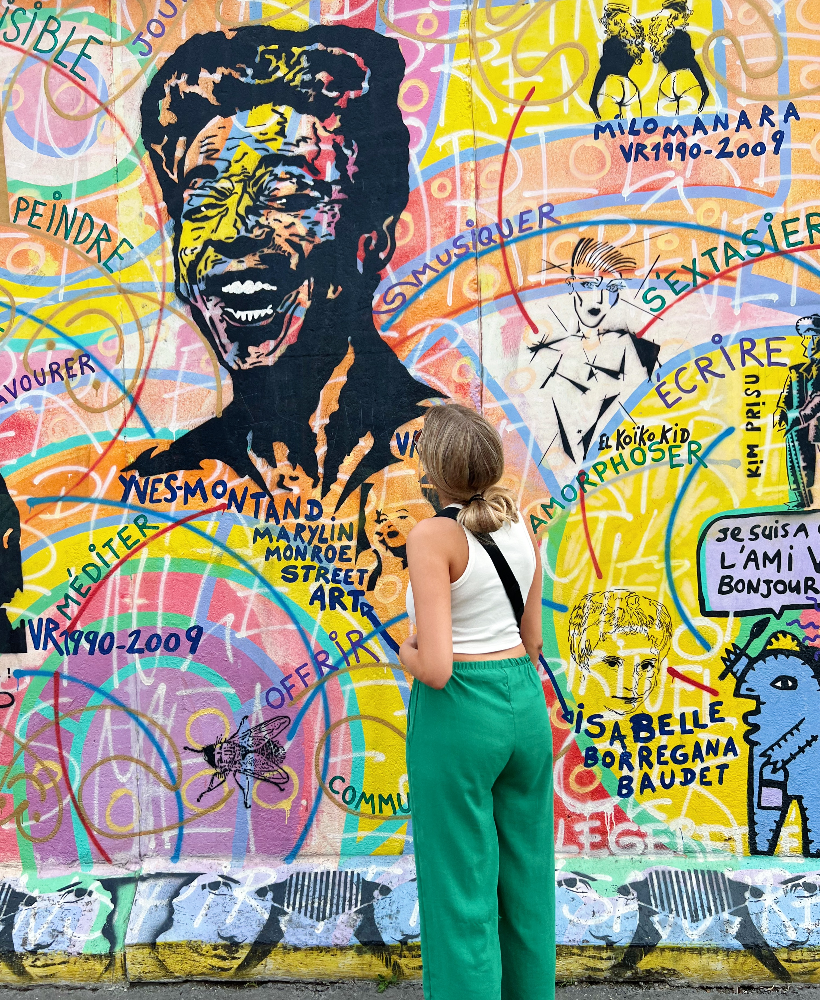
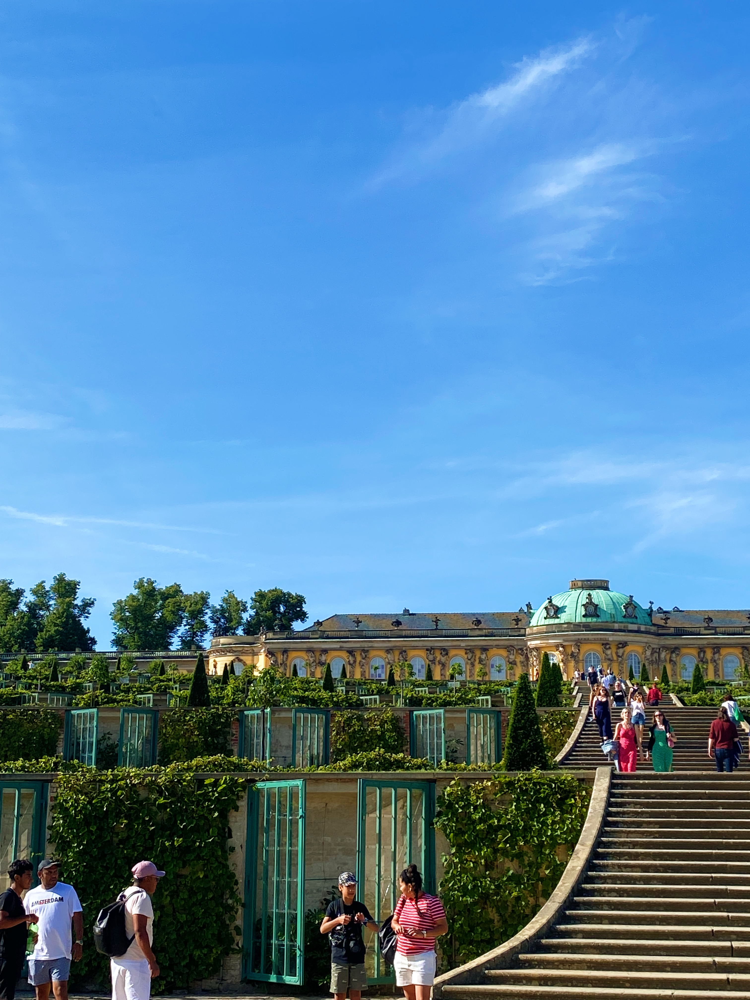
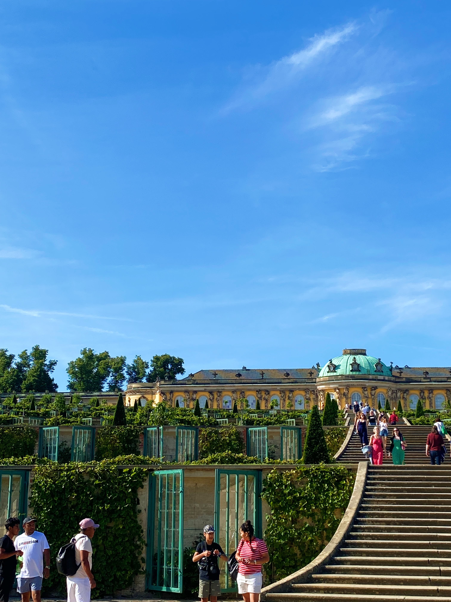

europe

amsterdam, holland

I visited Amsterdam while backpacking through Europe with my best friend in July 2022
Feel free to scroll through the images below


barcelona, spain

I visited Barcelona while backpacking through Europe with my best friend in July 2022
Feel free to scroll through the images below


berlin, germany

I spent New Year Eve 2024 in Berlin and stayed for a week with friends
Feel free to scroll through the images below


 

 



naxos, greece

I visited the islands of Greece with my family for a family reunion in June 2022
Feel free to scroll through the images below


paris, france

I visited Paris while backpacking in Europe with my best friend in July 2022
Feel free to scroll through the images below


norkopping, sweden

I've visited my family in Sweden multiple times, the most recent being for Christmas in December 2023
Feel free to scroll through the images below